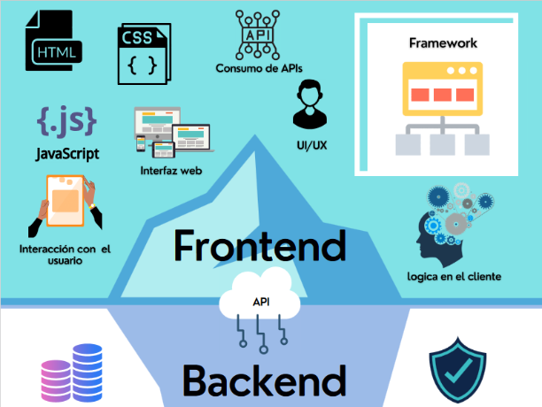

FRONTEND

El frontend o «desarrollo del lado del cliente» se refiere a la práctica de producir HTML, CSS y JavaScript.
Estos tres elementos se encargan de dar forma a la parte frontal de un sitio web o aplicación. Esto incluye los fondos,
colores, texto, animaciones o efectos.
Precisamente de ahí proviene el nombre de «desarrollo del lado del cliente», pues con el frontend se puede construir por completo
lo que los usuarios perciben al explorar un sitio y con el que pueden interactuar.
EJEMPLOS DE APLICACIÓN DEL FRONTEND
Como ya lo mencionamos, el frontend son todos los elementos y componentes visibles para los usuarios, y utilizan lenguajes de diseño como CSS, HTML y JavaScript. Algunos ejemplos de frontend son los siguientes:
- Optimización de motores de búsqueda (SEO).
- Accesibilidad (reconocimiento de voz, conversión de texto a voz).
- Funcionalidad en todos los navegadores y tamaños de pantalla (computadoras de escritorio, teléfonos móviles y tablets).
- Velocidad (cuanto más rápido cargue el sitio, mejor).
- Rendimiento del sitio web por medio de la limpieza del código.
¿CUÁLES SON LOS FUNDAMENTOS DEL DESARROLLO FRONT-END?

Por lo general, el desarrollador front-end trabaja con un diseñador gráfico (diseñador web) que proporciona el diseño gráfico. A menudo, los desarrolladores
front-end tienen la oportunidad de trabajar con un diseñador de UX que propone y crea un prototipo de interacciones que tendrán lugar en los sitios web. El papel de los desarrolladores front-end es
ponerlo todo junto. Se dice popularmente que un desarrollador front-end tiene la tarea de cortar un diseño gráfico, dividir el diseño en partes más pequeñas y codificar (HTML y CSS) en sitios web que los usuarios finalmente usan.
Luego, usando JavaScript, se agregaron las interacciones mencionadas anteriormente. Mientras que HTML y CSS3 nos permiten crear transiciones fluidas y animaciones básicas, JavaScript presenta todas las interacciones avanzadas entre la página y el usuario.
Usando JavaScript, agregaremos un menú desplegable, un control deslizante en la página, validación de formularios, transiciones entre subpáginas o animaciones avanzadas y juegos 3D (por ejemplo, usando Babylon-JavaScript). Datos para la lógica en JavaScript desde
el back-end de la aplicación, por lo tanto, la cooperación de front-end: desarrollador de back-end.
Los puestos de desarrollador front-end variarán mucho. El trabajo de un desarrollador front-end en una agencia interactiva y creativa, un desarrollador front-end en una empresa de desarrollo de software, se verá diferente, y un trabajo diferente para una persona que
trabaja en el desarrollo front-end de una empresa nueva.
Licenciatura en Sistemas Computacionales
© Copyright 2024. Eduardo Velázquez Pérez